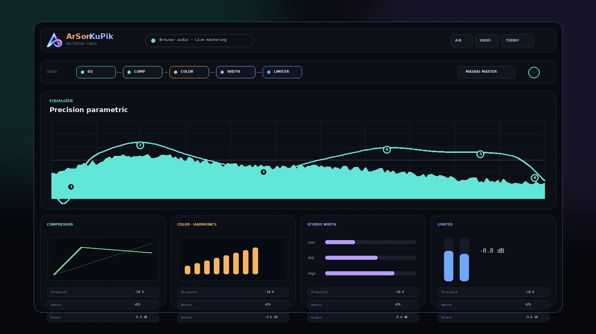

Precision parametric EQ
Tambahkan band langsung pada graph, atur filter slope, bypass per band, dan bandingkan spectrum pre/post.
Mastering browser · DSP lokal
ArSonKuPik menghadirkan mastering chain yang rapi untuk musik, video, dan live browser playback—tanpa mengunggah audio dan tanpa meminta akses ke seluruh website.

Studio interface · v0.3.101Kontrol tanpa terasa penuh
Dirancang untuk pendengar yang membutuhkan kontrol lebih baik daripada bass booster biasa, tetapi tidak ingin tampilan sebesar DAW di dalam browser.
Tambahkan band langsung pada graph, atur filter slope, bypass per band, dan bandingkan spectrum pre/post.
Atur kepadatan dan punch melalui compressor visual dengan gain-reduction meter L/R.
Perkuat body, presence, dan air tanpa bergantung pada satu trik loudness yang berlebihan.
Atur width low, mid, dan high sambil memantau correlation dan menjaga center image.
Gain staging, limiter, clipping feedback, dan pemilihan output device dalam satu alur.
Gunakan master preset, preset per modul, A/B comparison, undo/redo, dan custom preset lokal.
Signal flow
Setiap modul dapat diaktifkan, di-bypass, dan dipilih presetnya secara independen. Master bypass memudahkan perbandingan yang jujur.
Bersihkan energi yang tidak diperlukan dan bentuk tonal balance.
Stabilkan peak dan tambahkan density secara terkendali.
Tambahkan harmonics, body, presence, dan air.
Lebarkan stereo field berdasarkan region frekuensi.
Lindungi output akhir dan pertahankan headroom.
Privasi adalah arsitektur
ArSonKuPik hanya memproses tab yang dipilih secara eksplisit. Runtime tidak memiliki host permission, remote code, analytics SDK, sistem akun, atau jalur cloud processing.
Instalasi dan validasi
GitHub release berisi ZIP ekstensi bersih yang dibangun dari source pada tag tersebut. Developer dapat memuat root repository sebagai unpacked extension.
chrome://extensions.Tidak membutuhkan bundler atau dependency production.
Mulai dari release, audit source code, lalu sesuaikan chain dengan sistem audio Anda.